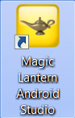
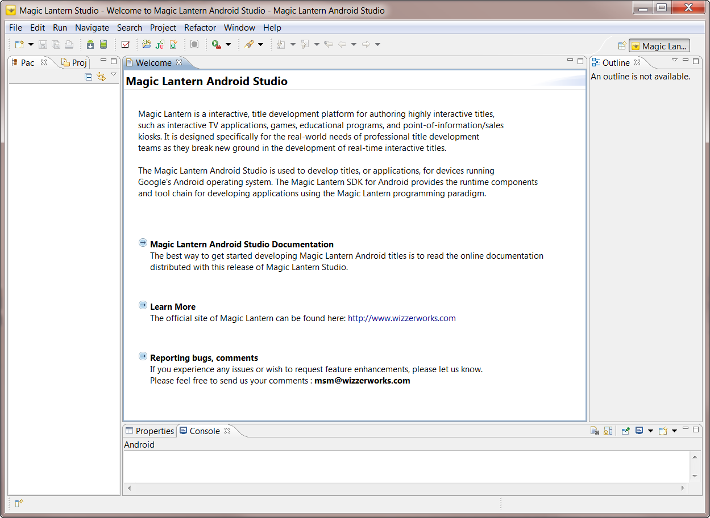

To launch The Studio, you should use the desktop shortcut provided for you when you installed the application. The shortcut is a wrapper around a Windows batch script that configures the environment required to run The Studio. If you used the installation defaults, then the batch script can be found at "C:\Program Files\WizzerWorks\MagicLanternAndroidStudio\mleandroidstudio.bat". Figure 1.1 shows the icon for the mleandroidstudio.bat shortcut.

Figure 1.1: Magic Lantern Android Studio Desktop Shortcut
Double-click on this icon to launch the Magic Lantern Android Studio. If you are running The Studio for the first time, then the application should look like this (Figure 1.2)

Figure 1.2: Start-up Window for Magic Lantern Android Studio
Note: An altenative way to launch The Studio would be to use the menu entry found in the main Windows Start Menu. Selecting "Start->All Programs->Magic Lantern->Magic Lantern Android Studio" will also execute the mleandroidstudio.bat script, launching the application.
The studio starts up in the Magic Lantern perspective. The perspective is a collection of utilities used to develop Magic Lantern titles. The developer will navigate between the Magic Lantern, Java and Debug perspecitives during title development, depending upon the activity he/she is involved with. For example, the Magic Lantern perspective provides utilities for developing and validating Digital Workprints. The Java perspecitve, however, is a better environment for writing the Java title and Actor code. The Debug perspective facilitates source-level debugging.
The first task in writing a Android title is to create a new Magic Lantern Project. This task will establish a Android project containing the build environment and dependencies for compiling your new title. More details can be found here, Creating a Magic Lantern Project.